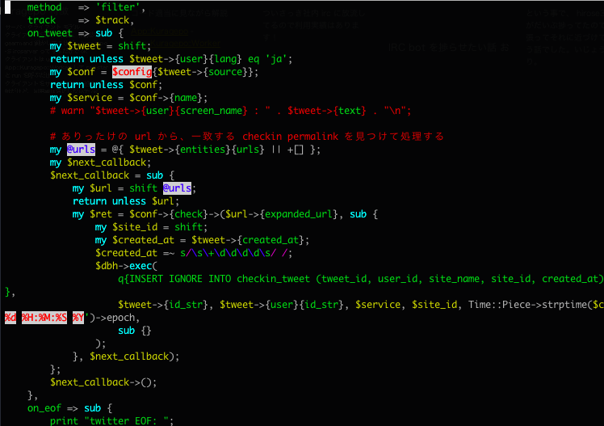
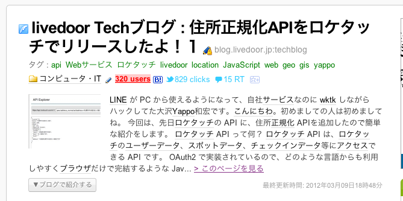

折角京都にきたので昼飯に懐石料理食べに行ったら思ってた時間の倍かかって遅刻しました。誠に申し訳ありません。
近又さんは完全予約制なのにアポ無しで入れてくれて、とても美味しかったです。すいません。。
Kyoto.PM 設立おめでとうございます！
そして、JPA 派遣制度でのご指名有り難うございます！
最初は捗るシリーズの続編にしようと思ってたんですが、よくよく Atnd を見てみたら Perl 初心者の方や学生の方がちらほら居たので、さっき思い立って複数のテーマをやる事にしました。
折角スポンサードして頂いて光栄すぎるのですが、今回東京から自腹で来た登壇者の方が居ててなんかほんとうすいませんすいません。
Perl とはユーモア溢れるコミュニティで、 CPAN というライブラリ共有サイトにはジョークに溢れるモジュールがいくつか点在していて、その多くが Acme という名前空間で登録されています。
このセッションでは、世界的にも数多くの Acme モジュールを生み出している私が、それぞれのモジュールの技術的な特徴を解説します。
Class::Inspector という、特定のパッケージに含まれている関数を操作出来るモジュールを使って、 use した側のコードをランダムに入れ替えるサークルクラッシャー的モジュール。
sub yappo {'yappo'}
sub nekokak {'nekokak'}
sub nagayama { 'nagayama' }
use Acme::Acotie;
say yappo(); # ランダムに出力
[実際のコードを見たり動かす]
FizzBuzz 問題を解決するためのコード量を 0 bit で解決する事が可能な夢のようなモジュール。
perl -MAcme::FizzBuzz -e ''
[実際のコードを見たり動かす]
というか、解説かこうと思って久しぶりにコード読んだらどうやって動いてるのか本気で理解出来なくて死んだw
過去の自分の書いたコードは他人のコード。という格言が有る通り、遊びのコードでも奇抜な実装をすると後で困るので可読性高くしましょう！というお手本になるモジュールでしたね。
Perl 初心者の時に作ったから特記事項無し。
Perl のオペコードの数字が3の倍数の時だけ、アホになってオペコードの数字を出力するモジュール。
use 5.015;
use Acme::NabeAtzz;
my $i = 0;
do {
print $i++;
print "\n";
};
[実際のコードを見たり動かす]
文字リテラルを読まなくするプラグマ。レキシカルプラグマとして使える。
use 5.015;
print "Dan The ";
do {
use dan;
print "Read "; # ここ空文字を出力
};
print "Man\n";
[実際のコードを見たり動かす]
Acme っていうネタモジュールだから適当に作ってると思われがちですが、ただバカな事をするのではなく誰もマネをしないような実装手段を用いてアホな事するのが肝心でした。
今時のまともなWeb系起業はみんな GrowthForecast を使っていると思います。
GrowthForecast を使わないとしても、グラフ化ツールを使ってサーバだけでは無いサービスの状態を見える化しているでしょう。
はてなカウンターですね！
僕のチームでも、ユーザ数やメタデータ数やコメント数裸威紅数、そのほか色々なデータ並びに手裏剣の販売数などもグラフに取っています。
社内の情報をグラフに取るだけだと、関わってるプロジェクト界隈の全体的な兆候まで見れなくて井の中の蛇蛙になってしまいますよね。
最近は競合のデータと自社データを、同じ条件で観測してグラフ化して全体的な傾向を取るような事もやっています。
メッセージングプロトコルを統一したインターフェィスで使えるようにした bot 向けのフレームワーク。
use AnySan; use AnySan::Provider::IRC;
my $irc = irc 'chat.example.net', nickname => 'AnySan1',
channels => { '#anysan1' => {}, };
AnySan−>register_listener( echo => { cb => sub {
my $receive = shift;
$receive−>send_replay($receive−>message);
} } ); AnySan−>run;
CENSORD

自社サービスの使われ方の傾向と他社サービスとの違いがあるのかどうかというのを客観的に知る事ができます。
特に「Twitter で tweet されている」という、自社/他社サービス問わず客観的に同じ条件でデータを取れると言うのが重要です。
客観的な指標を取る事によりサービスの梶の切り方の参考になるかなーと思ってる。
詳細は本人のリリース待ち。
ちなみに業務に投入されています。
客観的なサービスメトリクスを取得する手段として Twitter を活用すると捗るという提案でした。
最近の正規表現のトレンドと言えば...

この案件の基本的なエッセンスは6年前に発表しているのでさらっと説明。
多分込み入った話は YAPC でやろうかなとも思ってるし。。。
過去のアウトプットからの差分ですね。
メインは Proj::M::Normalize の実装の話。
住所の丁目番地を繋げる記号として - があるのですが、 Unicode 的にはグリフが似通っている MINUS SIGN とか EN DASH とかいっぱいあります。
自由入力だと-ｰ・‐ー－−―─とかが、全て違う文字なのにハイフンっぽい文字になります。これらの文字も実際に使われてるのを目撃しました。
基本的に条が付く地名は[南北]X条[東西]Y丁目の用になるので、南6-西3-6は南六条西3丁目6の用に表記出来る。
[南北]X条の変わりになんとか通を使う時もある。ただしなんとか通りの場合は、これらのルールとは違う街の作りになってる模様。
恐いので今回は飛ばします。
下田市一丁目のような丁目が付く字は北は東北、西は上京区元一丁目と結構ありました。
やはり通り名表記と言うのがネックになってくるわけで、ジオドスさんの用に本気出せれば良いのですが検討した結果、住居表示に準拠させる事にしています。利便性を考えてサービスで使う場合は、そのまま表示してジオコーディングや同一住所チェックする時だけ通り名を削除するのがベターかなと考えてます。
# 通り部分を消す
$address =~ s/.+?通り?//;
# 入ったりあがったりくだったり消す
$address =~ s/.+?[上下入][るル]//;
# 東西南北に入るよ
$address =~ s/.*?[東西南北](?:入[るル]?|へ)//g;
# 入ったりあがったりくだったり消す
$address =~ s/.+?[東西南北][上下入]//;
$address =~ s/.+?[上下][東西南北]側//;
$address =~ s/^[東西南北]側//;
# 角っこ消してみる
$address =~ s/[東西南北]{1,2}角$//;
# 側消す
$address =~ s/[東西南北]側$//;
# 先頭の丁目を消す
$address =~ s/^\d+丁目//;
仕事にならないだろうと思っててやってた事でも、いつの日か仕事になっちゃう冗談みたいな出来事が本当にあるので、ネタプログラミングでも本気で取り組みましょう。
あと、京都市の住所の事勉強させてください＞＜
ここまで来たら多分時間ないだろうから飛ばしてもOKだけど、時間が余れば住所正規化 UDF 作ったついでに距離計測 UDF やらジオコーディング周り UDF を作って、そこそこ UDF に慣れたので実際のコードを見ながら説明したいなと。
MySQL UDF 作るのは簡単
最近 impress.js っていうプレゼンツールが流行っているそうなんですが、一昨日会社の技術勉強会的なので clouder さんが markdown 記法から、このツールに変換するのを書いたという発表をしたので早速使いました。
まえの LDeNA #1 で、二社+1名の合同勉強会だと言うのに、プレゼンの最後にリクルーティングのスライド入れてたせいだかんだかわかりませんが、今回は自重しとく空気っぽいですが一緒に働ける機会があったら働きましょう！続きは Web で。
Use a spacebar or arrow keys to navigate